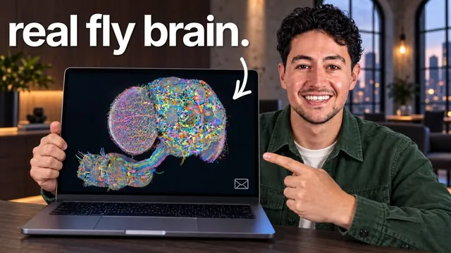

초파리 뇌를 업로드해서 메일 답장을 맡겼다

원본 영상 보기 →
- 생물학적 신경망도 "파인튜닝" 대상이 될 수 있다
- "AI가 이메일을 쓴다"는 말의 실체는 대부분 분류+템플릿 매칭이다
- 소규모·특수 목적 신경망이 오히려 실용적일 수 있다
한 줄 요약
Nick Saraev가 구글이 최근 공개한 실제 초파리(Drosophila) 뇌 지도(커넥톰, connectome)를 시뮬레이션에 올리고, GPT-6 Astra로 이메일 864건을 학습시켜 "생물학적 뇌가 내 이메일에 답장하게" 만든 실험 영상 — 정확도는 약 80%로 실용성은 낮지만, 생물학적 신경망도 인공신경망처럼 특정 목적에 맞게 "훈련"할 수 있다는 것을 실증한다.
전체 내용 정리
구글이 공개한 진짜 초파리 뇌 데이터, 커넥톰이란 무엇인가
구글 딥마인드 소속 연구자들이 초파리 한 마리의 뇌와 신경삭(nerve cord) 전체를 매핑해 "커넥톰(connectome)"이라는 이름으로 며칠 전 일반에 공개했다. 이 데이터셋에는 16만 6천 개의 뉴런과 그 사이의 연결 1억 2,500만 개가 통째로 들어 있고, 누구나 버튼 하나로 전체를 다운로드할 수 있다. Nick은 이것이 ChatGPT 같은 인공 신경망과 마찬가지로 "학습시켜서 원하는 일을 시킬 수 있는" 대상이라는 점을 핵심으로 짚는다. 공개 이후 며칠 만에 사람들은 이 초파리 뇌로 트랙매니아 게임을 플레이시키거나 실제 주식시장에서 주식을 사고팔게 하거나 파이썬 코드를 짜도록 학습시키는 등 온갖 시도를 쏟아내고 있다고 소개한다. Nick 본인은 이 뇌를 GPT-6 Astra라는 상위 모델의 감독 아래 데이터 수집·정제·학습을 맡겨 이메일에 답장하는 용도로 훈련시켰다.
생물학적 뇌를 시뮬레이션에 넣는 것, 윤리적으로 괜찮은가
영상 초반에 Nick은 스스로에게 "이게 윤리적인가"라는 질문을 던진다. 생물학적 뇌를 컴퓨터 안에 그대로 구현하는 것이 가능한지조차 수십 년째 논쟁 중이며, 그 답이 나오기도 전에 실제로 이런 일이 벌어지고 있다는 게 그의 진단이다. 그는 다음 달, 혹은 몇 달 안에 쥐·생쥐·원숭이 뇌, 그리고 결국 인간 뇌까지 업로드되는 시대가 올 것이라 내다본다. 이 초파리에게 실제 감각이나 고통이 있는지 알 방법이 없다는 걸 인정하면서도, 혹시 모를 불편함을 덜어주려고 초파리가 날아다닐 수 있는 가상의 마을과 친구들(Mochi, Pip 등), 가상의 먹이를 함께 만들어 최대한 쾌적한 환경을 제공했다고 밝힌다.
GPT-6 Astra로 이메일 분류기를 학습시킨 과정
Nick은 GPT-6 Astra를 하이 모드로 돌려 전체 학습 과정을 맡겼다. 방법은 단순했다. 새로 공개된 구글 딥마인드의 커넥톰 파일 링크를 GPT-6 Astra에 건네주고 "이 커넥톰으로 이메일 분류기를 만들어서, 이 초파리 뇌가 내 이메일에 답장하게 하고 싶다"고 요청한 뒤, 후원 문의·컨설팅·수강생 지원·일정 조율·뉴스레터·영수증이라는 여섯 개 카테고리를 지정해줬다. 학습 데이터로는 이 여섯 카테고리에 걸쳐 라벨링된 이메일 864건을 사용했고, 각 이메일은 문자들의 패턴으로 변환되어 신경 활동 패턴에 대응됐다. 정답을 알려주고 보상 기반 학습을 반복시킨 뒤, 어느 뇌 영역이 활성화되는지(비유하자면 간이 fMRI처럼) 관찰해서 그 영역을 각 라벨과 연결하는 방식으로 학습이 이뤄졌으며, 앱을 실행하는 동안 실시간으로 재학습하는 구조는 아니다. 한 가지 중요한 설계는, 초파리가 가상 환경 안에서 움직이는 것을 담당하는 "운동 피질" 모델은 이메일 학습에 쓴 모델과 완전히 분리해뒀다는 점이다. 같이 섞었다면 초파리가 이메일 데이터에 휘둘려 시속 40만km로 벽에 처박히듯 오작동할 수 있기 때문이다.
실제 작동 데모 — 이메일 하나가 답장이 되기까지
화면 우상단에는 초파리 뇌 안에서 그 순간 어떤 뉴런이 활성화되는지가 실시간으로 표시된다. Nick이 직접 특정 행동 쪽으로 초파리를 유도하면 그에 맞춰 신경 활동이 튄다. 평소 이메일 처리 중이 아닐 때는 가상 환경을 돌아다니며 가상 먹이를 먹거나 가상 NPC 친구들과 어울린다. 데모에서는 Paper Kite사로부터 온 12달러 결제 확인 이메일("영수증 데모 1043, 잔액 0달러")을 선택해 처리시켰더니, 신경망 패턴이 작동하고 초파리가 책상으로 날아가 답장을 작성하는 과정이 시각화됐다(이 책상 장면 자체는 시각화 목적일 뿐 뇌 구조에 실제 영향은 없다). 여섯 카테고리 중 "답장 불필요"로 분류되면 초파리가 태그를 붙여 답장 대기열에서 빼버린다. 화요일 오후 30분 통화를 요청하는 일정 조율 이메일에는 "가능한 시간 두 개와 시간대를 알려달라"는 답장을, 자동화 컨설팅 문의 이메일에는 "어떤 업무를 자동화하고 싶은지 먼저 알려달라"는 답장을 생성했는데, 두 경우 모두 상대방 이름 대신 "there"라는 일반 호칭을 썼다. 이는 초파리 뇌가 실시간으로 문장을 "작성"하는 게 아니라, 카테고리별로 미리 준비된 템플릿 답장 중 하나를 골라 매칭하는 방식이기 때문이다. 데모에서는 초안으로만 남겨뒀지만, Nick은 실제로 몇 시간 동안 완전 자동으로 실제 이메일에 실제 답장을 보내는 데까지 써봤다고 밝힌다.
정확도는 약 80%, 그리고 이 실험이 실용적이지 않은 이유
Nick은 이 초파리 뇌가 자신의 이메일 세트를 약 80% 정확도로 분류·답장한다고 밝힌다. 이는 처음부터 이 작업을 위해 설계된, 학습 시간도 훨씬 짧게 걸리는 소규모 인공 신경망 성능의 약 80% 수준에 불과하다. 그는 스스로도 이게 돈을 벌거나 실제로 자신의 자동화를 이 초파리 뇌에게 맡기려는 시도가 아니라, "이런 게 가능하다는 사실 자체가 얼마나 말도 안 되는지" 보여주기 위한 실험이라고 못박는다. 카테고리를 20개까지 늘려서 테스트해봤는데, 인공 신경망과 다른 네트워크 특성과 크기 제약 때문에 5~10개 카테고리 즈음부터 성능이 무너지기 시작하더라는 관찰도 덧붙인다. 애초에 초파리 뇌는 빛으로 향하고 좋은 냄새로 향하는 정도의 단순한 감각-행동 구조라서, GPT-2나 GPT-3 수준의 언어 능력을 기대할 수 있는 대상 자체가 아니라는 점도 분명히 한다.
더 큰 그림 — 인간 뇌 업로드로 가는 흐름
Nick은 이 실험을 단순한 가십이 아니라 더 큰 흐름의 초입으로 본다. 조만간 인간 뇌를 시뮬레이션에 업로드하는 시도가 등장할 것이고, 그렇게 되면 실제 시간보다 수천 배 빠른 속도로 그 시뮬레이션을 돌릴 수 있게 될 수 있다는 게 그가 주목하는 지점이다. 즉 한 사람의 실제 수명과 같은 물리적 시간 동안, 시뮬레이션 속에서는 여러 번의 생애에 해당하는 경험을 할 수도 있다는 이야기다. 동시에 그런 시뮬레이션 속 존재가 실제로 무언가를 "느끼는지" 여부는 여전히 답할 수 없는 철학적 질문으로 남는다고 강조한다. 그는 이번에 사용한 시뮬레이션(가상 친구 Mochi, Pip 포함)과 프로젝트 전체를 영상 하단 링크에서 무료로 공유하겠다고 밝히며 영상을 마무리한다.
핵심 인사이트
- 생물학적 신경망도 "파인튜닝" 대상이 될 수 있다: 커넥톰 공개로 인해, 인공신경망뿐 아니라 실제 생물의 뇌 구조도 특정 라벨(이메일 카테고리)에 맞춰 학습시킬 수 있다는 게 실증됐다. AI 학습의 개념이 실리콘을 넘어 생물학적 데이터로 확장되고 있다는 신호다.
- "AI가 이메일을 쓴다"는 말의 실체는 대부분 분류+템플릿 매칭이다: 이 초파리 뇌는 문장을 생성하는 게 아니라 이메일을 카테고리로 분류하고 미리 준비된 답장 템플릿을 고르는 역할만 한다. 실무에서 이메일 자동화를 설계할 때도 "생성"보다 "분류 후 템플릿 매칭"이 훨씬 안정적이고 저비용이라는 힌트가 된다.
- 소규모·특수 목적 신경망이 오히려 실용적일 수 있다: 생물학적 뇌는 소규모 인공 신경망 대비 80% 성능에, 카테고리 5~10개를 넘기면 무너진다. 화제성과 실용성은 별개이며, 실제 업무 자동화에는 목적에 맞게 작게 설계된 모델이 더 안정적이라는 사실을 역설적으로 보여준다.
오늘 당장 해볼 것
- 본인 메일함의 반복 문의를 후원·상담·일정조율·영수증 등 5~6개 카테고리로 직접 분류해보고, 카테고리별 "표준 답장 템플릿"을 미리 1개씩 써둔다 — 이메일 자동화의 첫 단계는 모델 성능이 아니라 이 카테고리·템플릿 설계다.
- Gmail이나 사용 중인 메일 툴의 필터·라벨 규칙을 열어, 지금 수동으로 분류하고 있는 이메일 유형이 있는지 점검하고 규칙으로 옮길 수 있는 것부터 옮긴다.
- 구글이 공개한 초파리 커넥톰 데이터셋과 이번 프로젝트 공개 자료(영상 설명란 링크)를 직접 열어보고, "생성형"이 아닌 "분류형" AI 자동화가 내 업무 중 어디에 적용 가능한지 메모해본다.